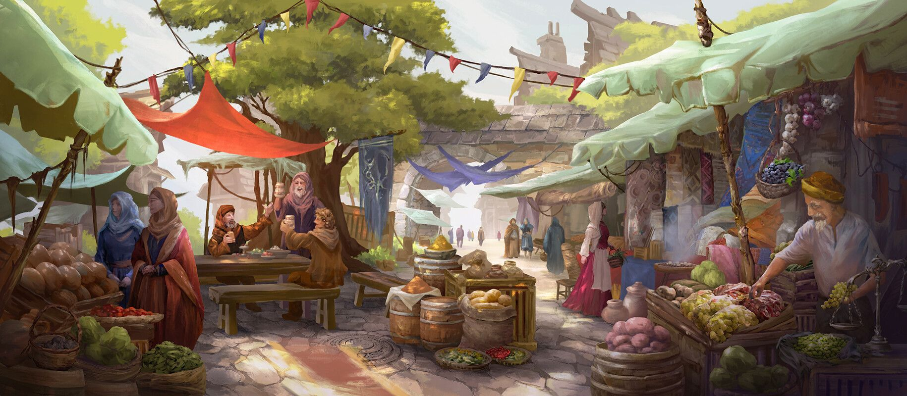

Du betrittst Finsterwacht welches trotz seines Namens sehr Hell und Fröhlich erscheint. Du läufst durch die strassen und kommst am markt an. Du läufst durch die von Verkaufsständengefüllten Strassen. Für jeden deiner Sinne ist etwas dabei. Du riechst herrliche Gerichte, siehst Strassentheater und auch Rüstungs und Waffenschmiede stellen ihre Ware zur schau.

Nachdem du für eine weile dir die verschiedensten Stände angeschaut hast kommst du an einen grossen Hauptplatz an. An einer Ecke findest du eine Karte mit Wegweisern. Vorallem drei Orte erwecken dein Intresse. Es gibt eine Örtliche Biliothek, eine Taverne mit Schlafmöglichkeiten und natürlich einen festen Dorfschmied. Wo willst du als ersten hin Abenteurer?
Mich interessiert die Bibliothek
Ich brauche eine Unterkumfp also gehe ich zur Taverne
Ich sollte meine Ausrüstung verbessern, ich gehe zum Schmied